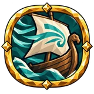
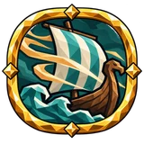
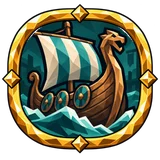
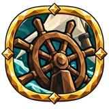
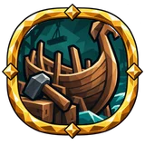
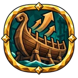
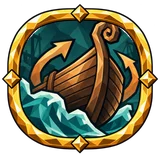
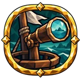

Корабельщик¶
Профессия · Timber
Области и ступени¶
Каждую область профессии на дереве ремёсел можно открыть, набрав достаточно опыта ремесла в этой профессии. Ступень профессии — наивысшая ступень среди открытых областей.
| Опыт ремесла | Ступень | Область | Описание |
|---|---|---|---|
| 55 | 1 | 6 | Дубовые рёбра и сосновые доски сулят плавание с полным трюмом. Корабельщик легко несёт припасы и придаёт корпусам форму, что быстро режет волны. |
| 184 | 2 | 8 | Тугие паруса ловят ветер, а точно выведенный киль отвечает на каждое касание штурвала. Суда, построенные на этой верфи, ходят быстро и уверенно поворачивают; с носа зоркий моряк различает дальние берега и безопасный путь среди волн. |
| 547 | 3 | 3 | Множество плаваний учат чувствовать море. Умелый кормчий ловит каждое дуновение ветра и легко проводит судно через узкие проливы. |
| 908 | 4 | 7 | Старый лодочный сарай укрыт туманом. Тайны корабельщиков, строивших здесь, ведомы лишь приливам. |
| 1,594 | 5 | 1 | Перед плаванием моряки шепчут молитвы Ньёрду. На этих водах ветер так часто дует в спину. |
| 2,929 | 7 | 2 | Быстрые корабли и сильные пловцы. Упавший с палубы возвращается к борту, не зная усталости. |
| 3,726 | 8 | 4 | В дальнем Океане глаза впередсмотрящего видят за горизонт. Моряки, что ныряют у борта, плывут не уставая, и море отдаёт больше. |
| 4,969 | 9 | 5 | Великие драккары легенд строились из древесины одного древнего дуба. Корабельщики-мастера не теряют в работе ничего. |
Средние узлы ремесла¶
| Название | Эффект | |
|---|---|---|
| Chance to Save materials on Shipbuilding | +8% шанса сберечь материалы при постройке кораблей | |
 |
Fair Wind | +15% шанса малого попутного ветра |
 |
Fair Wind | +15% к силе попутного ветра |
 |
Guarded Hull | 15% увеличение built ship прочность |
| Helmsman | 10% увеличение скорости корабля | |
| Helmsman | 10% увеличение скорости корабля | |
 |
Helmsman | 10% увеличение управляемости корабля |
| Helmsman | 10% увеличение управляемости корабля | |
| Helmsman | 10% увеличение скорости корабля | |
| Helmsman | 10% увеличение скорости корабля | |
| Helmsman | 10% увеличение управляемости корабля | |
| Helmsman | 10% увеличение управляемости корабля | |
 |
Load-bearing Hull | +30 грузоподъёмности +10% к скорости построенных кораблей |
 |
Master Hull | +10% к скорости построенных кораблей |
 |
Master Hull | +12% к управляемости построенных кораблей |
| Sea Watch | +8% шанса на прибавку рыбы находясь на корабле | |
 |
Sea Watch | 15% увеличение радиуса открытия карты находясь на корабле |
| Sea Watch | 15% уменьшение расход выносливости при плавании near your ship | |
| Swimming stamina cost near Ship | 15% уменьшение расход выносливости при плавании near your ship |
Задания¶
Игра предлагает до четырёх заданий на профессию из этих семейств. Варианты семейства добавляют условия или целевой предмет. Цели, награды и доступные варианты зависят от того, сколько областей профессии открыто.
Восстановить прочность судна, находясь вместе с ним в Океане¶
Предлагается с самого начала
| Награда (опыт ремесла) | Открыто: 0 | Открыто: 1 | Открыто: 2 | Открыто: 3 | Открыто: 4 | Открыто: 5 | Открыто: 6 | Открыто: 7 | Открыто: 8 |
|---|---|---|---|---|---|---|---|---|---|
| 216 | 259 | 302 | 346 | 389 | 432 | 475 | 518 | 562 |
Вариантов: 35
| Условия | Цель | Открыто: 0 (ед. прочности) | Открыто: 1 (ед. прочности) | Открыто: 2 (ед. прочности) | Открыто: 3 (ед. прочности) | Открыто: 4 (ед. прочности) | Открыто: 5 (ед. прочности) | Открыто: 6 (ед. прочности) | Открыто: 7 (ед. прочности) | Открыто: 8 (ед. прочности) |
|---|---|---|---|---|---|---|---|---|---|---|
| в Океане | любой | 300 | — | — | 570 | — | — | — | — | — |
| в Океане, за одну жизнь (смерть обнуляет прогресс) | любой | — | 371 | — | — | 627 | — | 798 | 884 | 969 |
| в Океане, во время дождя | любой | — | 332 | — | — | 561 | — | 714 | 791 | 867 |
| в Океане, ночью | любой | — | 332 | — | — | 561 | — | 714 | 791 | 867 |
| в Океане, под эффектом «Бег мертвеца» | любой | — | 137 | — | — | 231 | — | 294 | 326 | 357 |
| в Океане, под эффектом «Сырость» | любой | — | 332 | — | — | 561 | — | 714 | 791 | 867 |
| в Океане, рядом с двумя или более врагами в радиусе 15 м | любой | — | 137 | — | — | 231 | — | 294 | 326 | 357 |
| в Океане | Драккар | — | 332 | — | — | 561 | — | 714 | 791 | 867 |
| в Океане | Драккар пепельных земель | — | 332 | — | — | 561 | — | 714 | 791 | 867 |
| в Океане | Карве | — | 332 | — | — | 561 | — | 714 | 791 | 867 |
| в Океане | Плот | — | 332 | — | — | 561 | — | 714 | 791 | 867 |
| в Океане, за одну жизнь (смерть обнуляет прогресс) | Драккар | — | — | 388 | 461 | 533 | 606 | 679 | 751 | 824 |
| в Океане, во время дождя | Драккар | — | — | 347 | 412 | 477 | 542 | 607 | 672 | 737 |
| в Океане, ночью | Драккар | — | — | 347 | 412 | 477 | 542 | 607 | 672 | 737 |
| в Океане, под эффектом «Бег мертвеца» | Драккар | — | — | 143 | 170 | 197 | 224 | 250 | 277 | 304 |
| в Океане, под эффектом «Сырость» | Драккар | — | — | 347 | 412 | 477 | 542 | 607 | 672 | 737 |
| в Океане, рядом с двумя или более врагами в радиусе 15 м | Драккар | — | — | 143 | 170 | 197 | 224 | 250 | 277 | 304 |
| в Океане, за одну жизнь (смерть обнуляет прогресс) | Драккар пепельных земель | — | — | 388 | 461 | 533 | 606 | 679 | 751 | 824 |
| в Океане, во время дождя | Драккар пепельных земель | — | — | 347 | 412 | 477 | 542 | 607 | 672 | 737 |
| в Океане, ночью | Драккар пепельных земель | — | — | 347 | 412 | 477 | 542 | 607 | 672 | 737 |
| в Океане, под эффектом «Бег мертвеца» | Драккар пепельных земель | — | — | 143 | 170 | 197 | 224 | 250 | 277 | 304 |
| в Океане, под эффектом «Сырость» | Драккар пепельных земель | — | — | 347 | 412 | 477 | 542 | 607 | 672 | 737 |
| в Океане, рядом с двумя или более врагами в радиусе 15 м | Драккар пепельных земель | — | — | 143 | 170 | 197 | 224 | 250 | 277 | 304 |
| в Океане, за одну жизнь (смерть обнуляет прогресс) | Карве | — | — | 388 | 461 | 533 | 606 | 679 | 751 | 824 |
| в Океане, во время дождя | Карве | — | — | 347 | 412 | 477 | 542 | 607 | 672 | 737 |
| в Океане, ночью | Карве | — | — | 347 | 412 | 477 | 542 | 607 | 672 | 737 |
| в Океане, под эффектом «Бег мертвеца» | Карве | — | — | 143 | 170 | 197 | 224 | 250 | 277 | 304 |
| в Океане, под эффектом «Сырость» | Карве | — | — | 347 | 412 | 477 | 542 | 607 | 672 | 737 |
| в Океане, рядом с двумя или более врагами в радиусе 15 м | Карве | — | — | 143 | 170 | 197 | 224 | 250 | 277 | 304 |
| в Океане, за одну жизнь (смерть обнуляет прогресс) | Плот | — | — | 388 | 461 | 533 | 606 | 679 | 751 | 824 |
| в Океане, во время дождя | Плот | — | — | 347 | 412 | 477 | 542 | 607 | 672 | 737 |
| в Океане, ночью | Плот | — | — | 347 | 412 | 477 | 542 | 607 | 672 | 737 |
| в Океане, под эффектом «Бег мертвеца» | Плот | — | — | 143 | 170 | 197 | 224 | 250 | 277 | 304 |
| в Океане, под эффектом «Сырость» | Плот | — | — | 347 | 412 | 477 | 542 | 607 | 672 | 737 |
| в Океане, рядом с двумя или более врагами в радиусе 15 м | Плот | — | — | 143 | 170 | 197 | 224 | 250 | 277 | 304 |
Проплыть за штурвалом¶
Предлагается с самого начала
| Награда (опыт ремесла) | Открыто: 0 | Открыто: 1 | Открыто: 2 | Открыто: 3 | Открыто: 4 | Открыто: 5 | Открыто: 6 | Открыто: 7 | Открыто: 8 |
|---|---|---|---|---|---|---|---|---|---|
| 254 | 305 | 355 | 406 | 457 | 508 | 558 | 609 | 660 |
Вариантов: 35
| Условия | Цель | Открыто: 0 (метров) | Открыто: 1 (метров) | Открыто: 2 (метров) | Открыто: 3 (метров) | Открыто: 4 (метров) | Открыто: 5 (метров) | Открыто: 6 (метров) | Открыто: 7 (метров) | Открыто: 8 (метров) |
|---|---|---|---|---|---|---|---|---|---|---|
| — | любой | 500 | — | — | 950 | — | — | — | — | — |
| за одну жизнь (смерть обнуляет прогресс) | любой | — | 618 | — | — | 1,045 | — | 1,330 | 1,473 | 1,615 |
| во время дождя | любой | — | 553 | — | — | 935 | — | 1,190 | 1,318 | 1,445 |
| ночью | любой | — | 553 | — | — | 935 | — | 1,190 | 1,318 | 1,445 |
| под эффектом «Бег мертвеца» | любой | — | 228 | — | — | 385 | — | 490 | 543 | 595 |
| под эффектом «Сырость» | любой | — | 553 | — | — | 935 | — | 1,190 | 1,318 | 1,445 |
| рядом с двумя или более врагами в радиусе 15 м | любой | — | 228 | — | — | 385 | — | 490 | 543 | 595 |
| — | Драккар | — | 553 | — | — | 935 | — | 1,190 | 1,318 | 1,445 |
| — | Драккар пепельных земель | — | 553 | — | — | 935 | — | 1,190 | 1,318 | 1,445 |
| — | Карве | — | 553 | — | — | 935 | — | 1,190 | 1,318 | 1,445 |
| — | Плот | — | 553 | — | — | 935 | — | 1,190 | 1,318 | 1,445 |
| за одну жизнь (смерть обнуляет прогресс) | Драккар | — | — | 646 | 768 | 889 | 1,010 | 1,131 | 1,252 | 1,373 |
| во время дождя | Драккар | — | — | 578 | 687 | 795 | 904 | 1,012 | 1,120 | 1,229 |
| ночью | Драккар | — | — | 578 | 687 | 795 | 904 | 1,012 | 1,120 | 1,229 |
| под эффектом «Бег мертвеца» | Драккар | — | — | 238 | 283 | 328 | 372 | 417 | 462 | 506 |
| под эффектом «Сырость» | Драккар | — | — | 578 | 687 | 795 | 904 | 1,012 | 1,120 | 1,229 |
| рядом с двумя или более врагами в радиусе 15 м | Драккар | — | — | 238 | 283 | 328 | 372 | 417 | 462 | 506 |
| за одну жизнь (смерть обнуляет прогресс) | Драккар пепельных земель | — | — | 646 | 768 | 889 | 1,010 | 1,131 | 1,252 | 1,373 |
| во время дождя | Драккар пепельных земель | — | — | 578 | 687 | 795 | 904 | 1,012 | 1,120 | 1,229 |
| ночью | Драккар пепельных земель | — | — | 578 | 687 | 795 | 904 | 1,012 | 1,120 | 1,229 |
| под эффектом «Бег мертвеца» | Драккар пепельных земель | — | — | 238 | 283 | 328 | 372 | 417 | 462 | 506 |
| под эффектом «Сырость» | Драккар пепельных земель | — | — | 578 | 687 | 795 | 904 | 1,012 | 1,120 | 1,229 |
| рядом с двумя или более врагами в радиусе 15 м | Драккар пепельных земель | — | — | 238 | 283 | 328 | 372 | 417 | 462 | 506 |
| за одну жизнь (смерть обнуляет прогресс) | Карве | — | — | 646 | 768 | 889 | 1,010 | 1,131 | 1,252 | 1,373 |
| во время дождя | Карве | — | — | 578 | 687 | 795 | 904 | 1,012 | 1,120 | 1,229 |
| ночью | Карве | — | — | 578 | 687 | 795 | 904 | 1,012 | 1,120 | 1,229 |
| под эффектом «Бег мертвеца» | Карве | — | — | 238 | 283 | 328 | 372 | 417 | 462 | 506 |
| под эффектом «Сырость» | Карве | — | — | 578 | 687 | 795 | 904 | 1,012 | 1,120 | 1,229 |
| рядом с двумя или более врагами в радиусе 15 м | Карве | — | — | 238 | 283 | 328 | 372 | 417 | 462 | 506 |
| за одну жизнь (смерть обнуляет прогресс) | Плот | — | — | 646 | 768 | 889 | 1,010 | 1,131 | 1,252 | 1,373 |
| во время дождя | Плот | — | — | 578 | 687 | 795 | 904 | 1,012 | 1,120 | 1,229 |
| ночью | Плот | — | — | 578 | 687 | 795 | 904 | 1,012 | 1,120 | 1,229 |
| под эффектом «Бег мертвеца» | Плот | — | — | 238 | 283 | 328 | 372 | 417 | 462 | 506 |
| под эффектом «Сырость» | Плот | — | — | 578 | 687 | 795 | 904 | 1,012 | 1,120 | 1,229 |
| рядом с двумя или более врагами в радиусе 15 м | Плот | — | — | 238 | 283 | 328 | 372 | 417 | 462 | 506 |
Не предлагаются (5)¶
Задания из файлов игры, которые система заданий никогда не предлагает (старые написанные вручную задания, заменённые составными семействами, или удалённые)
| Задание | |
|---|---|
| Путешествуйте за штурвалом корабля. | Не реализовано |
| Путешествуйте за штурвалом корабля с полностью заполненным трюмом. | Не реализовано |
| Путешествуйте за штурвалом корабля. Повреждение корабля сбрасывает прогресс. | Не реализовано |
| Путешествуйте за штурвалом корабля в Океане. | Не реализовано |
| Путешествуйте за штурвалом корабля против ветра. | Не реализовано |
Данные из Path of Valheiman 5.3.6, извлечены 2026-10-27.